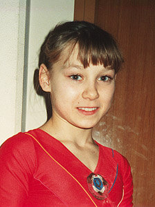

Aleftina Pryakhina (USSR)
1987 European AA Silver Medalist

Medal Total
European Championships: 1 Silver, 2 Bronze
Aleftina was born on June 13, 1972 in Ashkhabad, Turkmenistan. Her first coach was Larisa Pobeda, who discovered Aleftina in a kindergarten class. Three years later, master coach Oleg Ostapenko took over. Four years after that, Mikhail Klimenko spotted her at a children's competition and invited her to train with him at the Central Army Sports Club in Moscow.
Competition Results
1985
SKDA Championships: 1st UB, 1st B
1986
Chunichi Cup: 3rd AA,1st V, 1st FX
Jr. European Championships: 3rd AA, 1st FX, 2nd V, 4th UB
Riga International: 1st AA, 1st UB
Tokyo Cup: 1st V, 1st FX
1987
European Championships: 2nd AA, 3rd UB, 3rd FX,
6th B
Moscow News: 4th AA
USSR Championships: 3rd AA, 5th B, 8th V
USSR Cup: 7th AA
1988
USSR Championships: 8th AA
USSR Cup: 17th AA
World Sports Fair: 7th AA, 2nd UB
1989
Armed Forces Championships: 1st AA
USSR Championships: 8th V
USSR Cup: 13th AA
This page was created on September
28, 2002 and was last updated on July 19, 2024.
© Gymn Forum